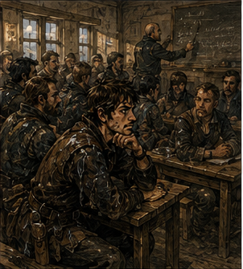

The guild gave me a free seat because Merek Verran was a liar.
This was not how they described it.
The ink-thumbed clerk called it a hazard adjustment.
“Your contract was materially misrepresented,” she said. “The guild can refund part of the filing share or issue training credit.”
“How much training credit?”
“Eight copper.”
“How much refund?”
“Six.”
“Training.”
“I knew you were going to say that.”
“Why offer the worse option?”
“It costs us less.”
I stared at her.
She stared back.
“That was refreshingly honest.”
“It also expires at the end of the month.”
“Less refreshing.”
She slid a small card across the desk.
FIELD FAILURE AND PARTY RECOVERY
BRONZE CONTINUING PRACTICE
Third bell to sixth.
Hall Two.
Instructor: Dema Rusk.
I read it twice.
“Party recovery?”
“Yes.”
“Who teaches this?”
“It says.”
“I mean what kind of training?”
“The kind where you attend and find out.”
“Can Alden come?”
“If Alden pays eight copper.”
“He won’t.”
“Then probably not.”
I pocketed the card.
“Jorren?”
“Greg.”
“Fine.”
She returned to her ledger.
I made it three steps.
“Is there food?”
“No.”
“That should be on the card.”
“Go away.”
Hall Two smelled like wet wool, old wood, and twenty-seven adventurers who had all decided they were dry enough.

The rain had stopped sometime before dawn, but the city was still carrying it. Cloaks hung from pegs. Boots left dark prints across the floor. Two windows had been opened despite the cold because somebody near the back smelled like horse.
Rows of benches faced a chalk board.
I stopped in the doorway.
This was a classroom.
I had spent decades becoming one of the strongest support adventurers alive, died, returned to my nineteen-year-old body, discovered my magic was pathetic, accumulated debt, found future-important people before they became future-important, and nearly had my face opened by an iron hook.
Apparently the second life also contained professional development.
A woman at a registration table held out her hand.
“Card.”
I gave it to her.
She checked my name against a list.
“Greg.”
“Yes.”
“Company?”
“No.”
“Party?”
“No.”
She looked up.
“Independent?”
“For now.”
She marked something.
“Prior recovery certification?”
“No.”
“Field medicine?”
“Informal.”
“That means no.”
“That seems harsh.”
“It means no.”
She handed me a slate, a piece of chalk, and a folded strip of yellow cloth.
“What’s this?”
“Keep it.”
“Why?”
“You’ll find out.”
I loved and hated that answer.
I found a seat in the third row.
The man beside me was perhaps thirty, with a broken nose that had healed sideways and a bronze guild pin polished bright enough to signal either pride or boredom.
He looked at my slate.
“First time?”
“Yes.”
“Third.”
I looked at him.
“Why?”
“Company pays.”
“That is not a reason to suffer.”
“It is when they pay me for the day too.”
Excellent.
“What’s your name?”
“Berren.”
“Greg.”
“I know.”
I disliked that.
“Why?”
“You’re hook boy.”
I closed my eyes.
“No.”
“South Canal?”
“Yes.”
“Hook through the wall?”
“Near the wall.”
“You fought him through it.”
“For part of the fight.”
Berren grinned.
“Hook boy.”
“I have made a mistake coming here.”
“You haven’t met Rusk yet.”
At exactly third bell, a woman shut the hall doors.
Not the instructor.
The instructor was already standing at the front.
Dema Rusk was broad through the shoulders, maybe fifty, with gray hair cut short and a face that had acquired its lines through repeated disappointment. She wore no armor. A wooden whistle hung from her neck.
On the board behind her were four words.
STOP.
COUNT.
MOVE.
DECIDE.
She looked at us.
“Who here has recovered a party member under active threat?”
Hands went up.
Mine did not.
I had recovered hundreds.
Not in this body.
Not under this certification.
Interesting question.
“Who has been recovered?”
More hands.
Mine went halfway up before I stopped.
Old body.
Current body.
Was that yes?
Rusk saw me.
“You.”
“Complicated.”
“No.”
The room laughed.
She pointed at the board.
“Today is not about winning fights. It is not about healing. It is not about courage. If you want courage, go to a tavern and pay someone to sing at you.”
A few people smiled.
Rusk did not.
“This is about what happens after the plan fails.”
That got quieter.
“Most Bronze deaths do not happen because nobody knew how to swing a sword. They happen because something changed and the party kept executing the old plan.”
I sat straighter.
That was good.
Annoyingly good.
Rusk tapped STOP.
“First failure. You do not stop.”
COUNT.
“Second failure. You do not know what you still have.”
MOVE.
“Third. You move the wrong person, the wrong direction, at the wrong time.”
DECIDE.
“Fourth. Nobody decides what happens next.”
A man in the first row raised his hand.
“What if the leader’s down?”
“Then somebody else decides.”
“What if nobody knows enough?”
“Then somebody decides badly.”
A few people shifted.
Rusk said, “A bad decision everyone can follow is often safer than five excellent decisions executed separately.”
I felt something old move in me. Not memory. Recognition.
There were exceptions. Many. I could build twelve objections before she finished the sentence: terrain, magical interference, split objectives, unknown threat, specialized roles, command failure, deliberate decentralization. All true. All useless to a room full of Bronze adventurers learning how not to die in a ditch.
I shut up.
Berren glanced at me.
“What?”
“You made a face.”
Everyone knew the face.
Rusk divided us into groups of four.
My group contained Berren, a young woman named Lio who carried a bow taller than she was, and a bald man named Cass who announced within thirty seconds that he was a shieldman.
Not that he used a shield.
That he was a shieldman.
It was apparently metaphysical.
Our first exercise was insulting.
One person lay on the floor.
One person was injured.
One was disoriented.
One was functional.
Rusk blew the whistle.
We had to get everyone across a chalk line.
No magic.
No weapons.
No running.
I was functional.
Of course.
Berren lay down.
Lio clutched one arm.
Cass spun once in place because apparently that represented disorientation.
I said, “Cass, take Berren’s shoulders. Lio, good arm under his knees. I’ll guide.”
Cass said, “I can carry him.”
“Yes.”
“I’m stronger than her.”
“Yes.”
“So I carry him.”
“No.”
“Why?”
“Because if you fall, we lose both of you.”
Cass frowned.
Rusk blew the whistle again.
“Dead,” she said.
“What?”
“All four.”
“We were talking.”
“Yes.”
“That seems unfair.”
“Threat disagreed.”
Reset.
Second attempt.
I gave fewer words.
We crossed.
Rusk marked something on her slate.
I wanted to see it.
She turned it away.
Second exercise added a fifth person represented by a sandbag.
“Equipment,” Rusk said.
“What kind?” someone asked.
“Expensive.”
The room laughed.
“Leave it,” she said.
Half the room objected.
Good.
That was the point.
Our sandbag died heroically.
Cass mourned it.
Third exercise gave us six wooden disks representing spells, supplies, injuries, and time.
Now I was interested.
Too interested.
I began rearranging them.
Berren slapped my hand.
I stared at him.
“Too fast,” he said.
I had created a monster.
“What?”
“Rusk said wait for the whistle.”
“I was organizing.”
“You were cheating.”
“I was preparing.”
“Hook boy cheats at school.”
“I hate you.”
The whistle blew.
We turned the disks.
HEALER: CONSCIOUS, NO MANA.
FIGHTER: LEG INJURY.
SCOUT: MISSING.
EXIT: UNKNOWN.
THREAT: NOT VISIBLE.
TIME: THREE MINUTES.
My mind opened.
Too wide.
Find scout? No.
Establish exit. Inventory mobility. Healer useful without mana? Knowledge, hands. Fighter can move? Leg injury unspecified. Threat not visible means not absent. Three minutes until what? Unknown.
“What does three minutes mean?” I called.
Rusk said, “You have three minutes.”
“Until what?”
“Decide without knowing.”
Excellent.
Terrible.
Cass said, “Find scout.”
“No,” I said.
Lio said, “Exit first.”
“Yes.”
Berren pointed to the fighter disk.
“Can he walk?”
Rusk said, “With help.”
“Then move,” I said.
“Where?” Cass asked.
We had no exit.
Good.
I smiled.
Cass stared.
“Why are you happy?”
“This is a good problem.”
“It’s a terrible problem.”
“Yes.”
Lio said, “Backtrack.”
I looked at her.
“Why?”
“We know where we came from.”
There it was. Not clever. Not perfect. Known.
“Backtrack,” I said.
Cass frowned. “Scout?”
“Mark and return if we can.”
“What if he’s alive?”
“What if all four of us die looking?”
Cass did not like that.
Neither did I.
That mattered.
Rusk blew the whistle.
“Stop.”
She went group by group.
Some searched for the scout.
Some split.
One tried to fortify in place.
One spent two minutes arguing whether the missing scout counted as abandoned.
Rusk did not tell us the right answer.
Instead she asked what information each choice assumed.
That was better.
Much better.
When she reached us, she looked at Lio.
“Why backtrack?”
“Known route.”
“Risk?”
“Threat may be behind us.”
“Greg?”
I blinked.
“How do you know my name?”
“Registration exists.”
Right.
“Risk?”
“Moving the injured fighter costs speed. Backtracking may take us toward whatever separated the scout. We also don't know whether the known route is still open.”
“Then why choose it?”
“Because unknown exit plus unknown threat plus missing scout gives us too many unresolved variables. Known route removes one.”
Rusk nodded.
“Fine.”
Fine.
I wanted more than fine.
That was embarrassing.
At fourth bell, we took a break.
There was no food.
I complained to Berren.
He produced dried apple from his pocket.
“You knew.”
“Third time.”
“This is corruption.”
“This is experience.”
Everyone in the city had agreed on phrases without me.
I bought two pieces from him for one copper.
“Company pays you and you sell food to people who didn’t bring any.”
“Yes.”
“You’re going to be rich.”
“No. I’m Bronze.”
Fair.
The hall doors opened.
A guild runner entered.
He did not look frightened. That was why I noticed him. Frightened runners were easy. This one looked focused.
He crossed to Rusk and spoke quietly.
She listened.
Asked one question.
He answered.
She looked toward the registration woman.
The woman left.
Training resumed.
Nothing happened.
That was the first sign.
The fifth exercise was physical.
Yellow cloth meant injured leg.
We tied it above the knee and had to move through a line of benches while another group rolled padded balls at us.
Not hard.
Not dangerous.
Humiliating.
My current body was better at being nineteen than it had been three weeks ago.
That did not make it good.
I ducked one ball.
Caught another.
Tried to pivot around a bench.
My right foot planted.
My body expected reinforcement that did not exist.
I stumbled.
Berren caught my coat.
“Got you.”
“I had it.”
“No.”
“I was recovering.”
“You were becoming floor.”
We kept moving.
A ball struck my shoulder.
Lio shouted, “Leave him.”
“Correct,” Rusk called.
I stared at her.
“Excuse me?”
“You’re ambulatory.”
“I was hit.”
“With cloth.”
“It was emotionally significant.”
“Move.”
We moved.
Halfway through, Cass went down deliberately.
Now we had a choice.
I started toward him.
Lio said, “Line first.”
I stopped.
She was right.
Again.
This was becoming irritating.
We crossed the line, established the safe side, then went back two together.
Rusk blew the whistle.
“Better.”
I looked at Lio.
“How long have you been Bronze?”
“Seven months.”
“Party?”
“Usually my sister and two cousins.”
“What does your sister do?”
“Bosses us around.”
“That may be a class feature.”
Lio smiled.
“Why?”
“Nothing.”
At fifth bell, another runner came.
Different runner.
Wet boots.
No rain outside.
Mud from somewhere else.
He went directly to Rusk.
This conversation lasted longer.
The room noticed.
Not everyone.
Enough.
Rusk asked, “Confirmed?”
The runner said something too quiet to hear.
Rusk looked at the doors.
Then at us.
“Ten-minute break.”
That was wrong.
We had not been scheduled for one.
People stood.
Conversation rose.
I stayed seated.
Berren stretched.
“What?”
“Nothing.”
“Face.”
“Runner.”
“What about him?”
“Wet boots.”
Berren looked toward the door.
“So?”
“It stopped raining.”
“Ground’s wet.”
“Not here.”
He stared at me.
“You need hobbies.”
I had hobbies.
Most were currently impossible.
The registration woman returned carrying a stack of paper.
She and Rusk spoke.
Two other guild staff entered.
One began taking names from a board near the wall.
Not ours.
Companies.
Available parties.
I stood.
Berren grabbed my sleeve.
“Where?”
“Water.”
“You have some.”
“More water.”
“You’re lying.”
“Yes.”
He let go.
I walked toward the hall door.
Rusk stepped in front of it.
“No.”
“This is becoming a city motto.”
“Break is inside.”
“Why?”
“Because I said so.”
“What happened?”
Her expression did not change.
“Something that is not currently your assignment.”
That phrasing was familiar.
“Where?”
“No.”
“Road?”
“No.”
“Town?”
Her eyes moved.
Tiny.
Enough.
I knew better than to spend it.
Mostly.
I returned to my bench.
That surprised her.
It surprised me too.
Cass said, “What’s happening?”
“I don’t know.”
“Didn’t ask?”
“I did.”
“And?”
“I still don’t know.”
Berren handed me another piece of dried apple.
Free.
That was how serious things had become.
The ten-minute break lasted seventeen.
When Rusk resumed, two seats were empty.
A pair from the back row had been called out.
She did not explain.
The final exercise began with a map.
A bad map.
One road.
One stream.
Three buildings.
A bridge.
A wooded slope.
Rusk placed four markers near the buildings.
“Your party is returning from a routine escort.”
She placed six more markers on the road.
“Civilians.”
Then three at the bridge.
“More civilians.”
Then five behind them.
“More.”
Someone said, “From what?”
Rusk looked at him.
“Does it matter yet?”
“Yes.”
“Why?”
“If we know what they’re running from.”
“You don’t.”
A murmur moved through the room.
Rusk continued.
“The civilians are moving toward you. They disagree about what happened. One says animals. One says monsters. One says bandits using trained animals. One says the town watch told everyone to leave. One says nobody told anyone anything.”
My skin tightened. Not memory. Attention.
Rusk said, “You have four party members. One cart. Two injured civilians already aboard. Your contract is to deliver the cart.”
Cass raised his hand.
“To where?”
“Here.”
She tapped the far edge of the map.
“Through them?”
“Yes.”
“What town?” I asked.
Rusk looked at me.
“This is an exercise.”
That was not an answer.
The room had changed. Everyone knew it. Not because of the map. Rusk was using something fresh.
Berren leaned toward me.
“Face.”
“I know.”
Rusk gave us five minutes.
The groups began arguing.
Go forward.
Turn back.
Question civilians.
Protect cart.
Abandon cart.
Send scout.
Do not send scout.
Find authority.
There was no authority.
Good.
Bad.
Real.
I looked at the map.
The stream crossed the road before the bridge.
Wooded slope to the north.
Three buildings clustered south.
“What are the civilians carrying?” I asked.
Rusk looked at me.
“Whatever they could.”
“Animals?”
“Some.”
“Wagons?”
“Some.”
“Children?”
“Yes.”
“Uniform direction?”
“Mostly.”
“Any injuries?”
“Yes.”
“From what?”
“Different answers.”
There. That was the problem. Not monsters. Information. The first useful fact was that people were leaving. Everything else was story.
I looked at my group.
“We don’t go through them.”
Cass said, “Contract.”
“Cart doesn’t move through a frightened crowd.”
Berren nodded.
“Turn?”
“Not yet.”
Lio pointed at the buildings.
“Get off the road.”
“Yes.”
“Then what?”
I looked at the map.
“Count.”
Rusk heard.
Her eyes flicked toward the board at the front.
STOP.
COUNT.
MOVE.
DECIDE.
Damn her.
“Count what?” Cass asked.
“People. Injuries. Direction. Who saw what personally. Who heard it. How long ago. Which road they used.”
Berren said, “That’s a lot.”
“Yes.”
“We have a cart.”
“Yes.”
“We’re Bronze.”
“Yes.”
“What if the monsters arrive while you’re interviewing refugees?”
I looked at him.
“Then we learn something.”
He laughed once.
“Terrible answer.”
“Yes.”
Rusk blew the whistle.
Exercise over.
Nobody relaxed.
She stood at the front.
“For those of you who noticed, yes. The scenario was adapted from a report received during class.”
The room went silent.
There it was.
Fire.
Not literal.
Not yet.
“Where?” someone asked.
Rusk looked toward the registration table.
The woman there had stopped pretending to organize paper.
“Darrowmere,” Rusk said.
I knew the name.
Not from the future.
From a road sign.
A market ledger.
Somebody at Antonius’s warehouse had mentioned wool from there.
A town east and north.
Close enough for carts.
Far enough that I had never been.
“What happened?” Lio asked.
“We do not know.”
A man in the back said, “You said monsters.”
“I said civilians are saying monsters.”
“What kind?”
“We do not know.”
“How many?”
“We do not know.”
“Is the town evacuated?”
“We do not know.”
The repetition changed the room. People wanted facts. The guild had uncertainty.
Rusk continued.
“What we know is that travelers began arriving at North Gate shortly after fourth bell. More have followed. Some are from Darrowmere. Some are from farms along the road. At least one wagon has injured people. The city watch is managing the gate. The guild has been asked for additional hands.”
“How bad?” Cass asked.
Rusk looked at him.
“That is another version of a question we cannot answer yet.”
Someone swore softly.
Outside the hall, a bell rang.
Not a memory bell.
A real one.
Two short strokes.
Pause.
Two more.
People looked toward the door.
Berren said, “Gate call.”
Rusk nodded.
“Training is ending early.”
Nobody complained about the missing hour.
That was impressive.
“Those already assigned today remain assigned unless recalled. Unassigned Bronze do not run to North Gate because you heard the word monsters.”
Several people looked offended.
Correctly accused.
“You report to the board. You take instructions. You do not become another problem.”
Her eyes found mine.
This was discriminatory.
Also reasonable.
The doors opened.
Noise entered. Not panic. Activity: boots, voices, a clerk calling company names, someone asking for blankets, someone else asking how many beds the guild infirmary had.
The world had become larger while we sat in a classroom moving wooden disks.
I stood.
My first impulse was North Gate.
My second was Antonius.
Freight.
Roads.
Darrowmere goods.
People arriving meant carts, food, rooms, money, missing workers, stories.
My third was Alden.
Of course it was.
My fourth was Hessa.
My fifth was the board.
Too many.
I stopped.
Rusk was collecting slates.
I handed her mine.
“What do I do?”
She looked at me.
It was a stupid question.
A useful one.
“Are you assigned?”
“No.”
“Then check the board.”
“After?”
“Do what it says.”
“What if it says nothing?”
“Then you are not needed yet.”
I hated that answer.
She saw.
“Recovery starts before the disaster reaches you,” she said. “Sometimes that means staying out of the road.”
I looked past her.
The hall emptied around us.
“What if they need more people later?”
“Then you will still exist later.”
Also irritating.
Also good.
I nodded.
At the board, three new postings were being written.
NORTH GATE SUPPORT.
INFIRMARY CARRY.
ROAD INTAKE RUNNERS.
No monster contract.
No rescue expedition.
No glorious emergency.
People needed bodies moved, names recorded, water carried, messages run.
I read each posting.
Then I read them again.
A voice behind me said, “Greg?”
Alden.
His replacement escort had apparently returned early. Mud marked both boots to the ankle. His red scarf was tied at his wrist again.
He looked at the board.
“What happened?”
“Darrowmere.”
“What happened there?”
“I don’t know.”
He looked at me.
That answer had become easier. Not easy. Easier.
Behind him, two women entered the guild supporting an older man between them.
Travel dust covered all three.
Not rain.
One woman was crying.
The other was singing under her breath.
I could not hear the words.
Only the tune.
Simple.
Four notes.
Again.
Four notes.
The older man snapped, “Stop that.”
She stopped.
Alden looked at me.
I had gone still.
Not because I knew the song.
I did not.
I knew the shape of songs that started this way.
One frightened person repeating something because silence was worse.
By tomorrow there would be words.
By next week there might be verses.
Most would be wrong.
Some would survive longer than facts.
“What?” Alden asked.
I looked at the board.
NORTH GATE SUPPORT needed six Bronze.
Four names already filled the line.
I picked up the pen.
“Nothing yet,” I said.
Then I signed.